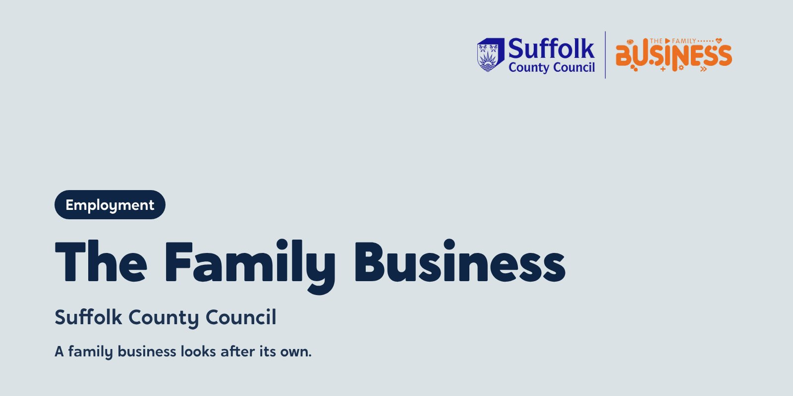
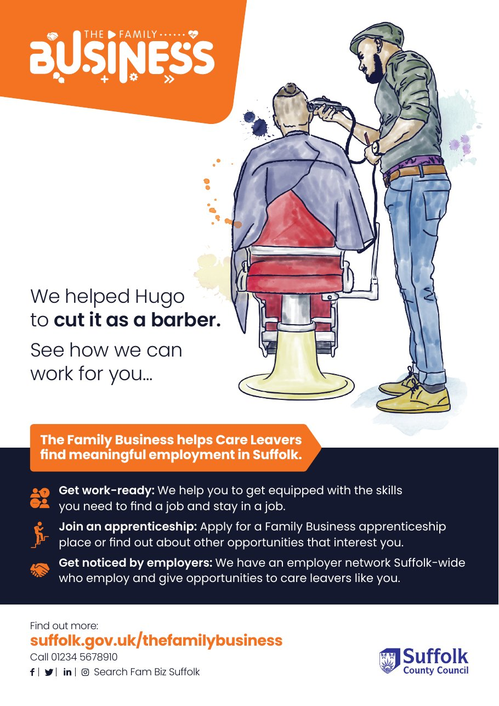
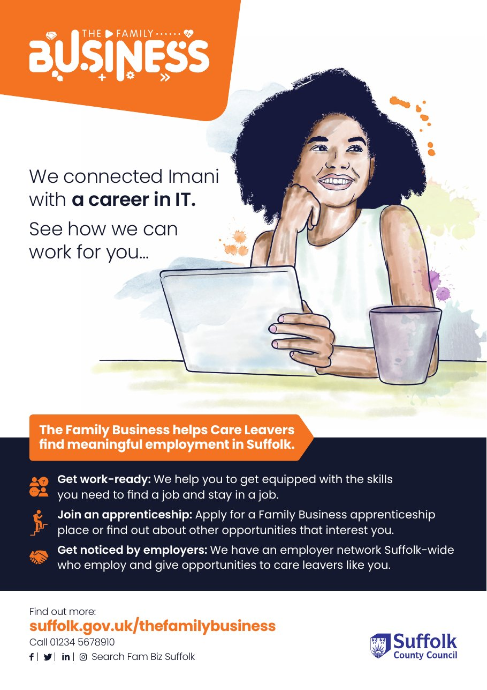
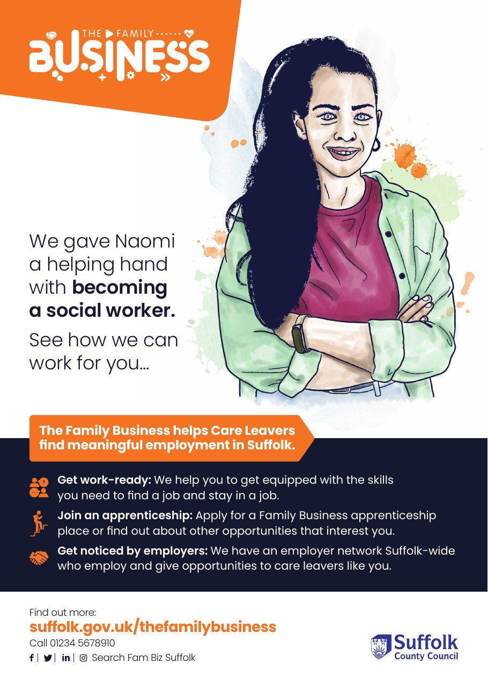
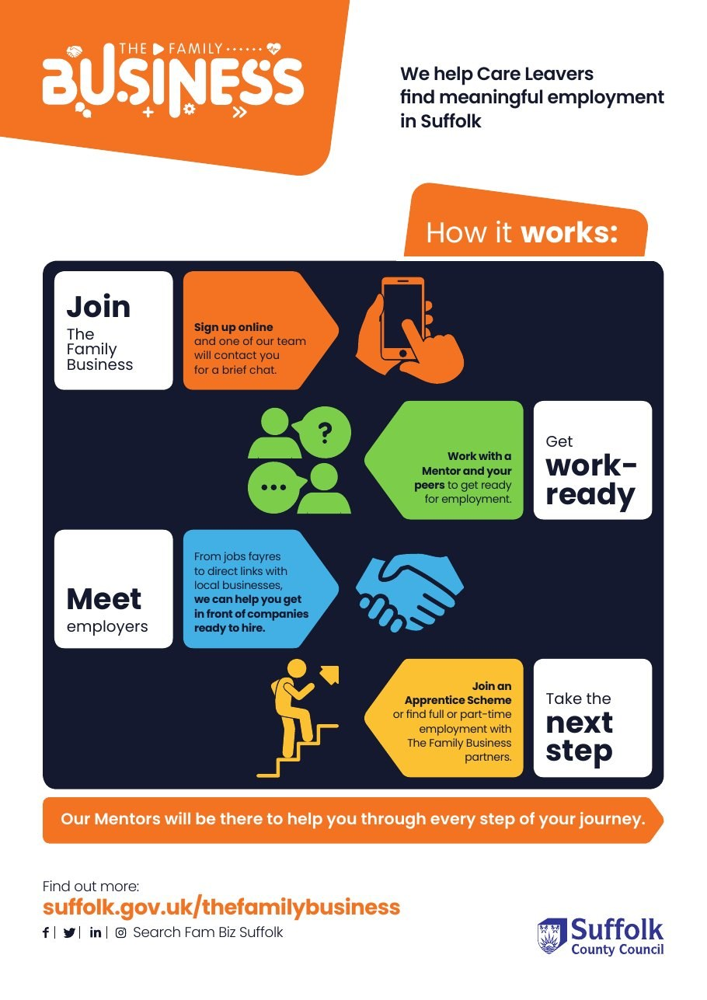
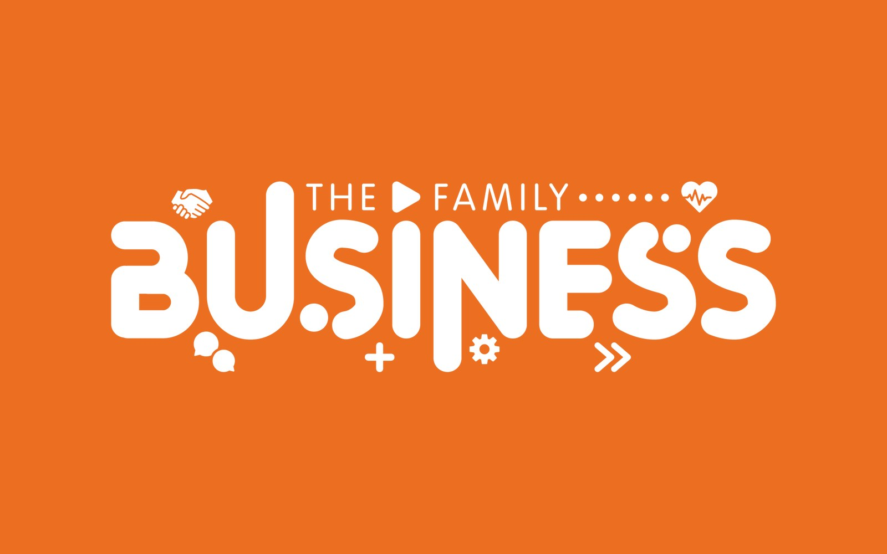
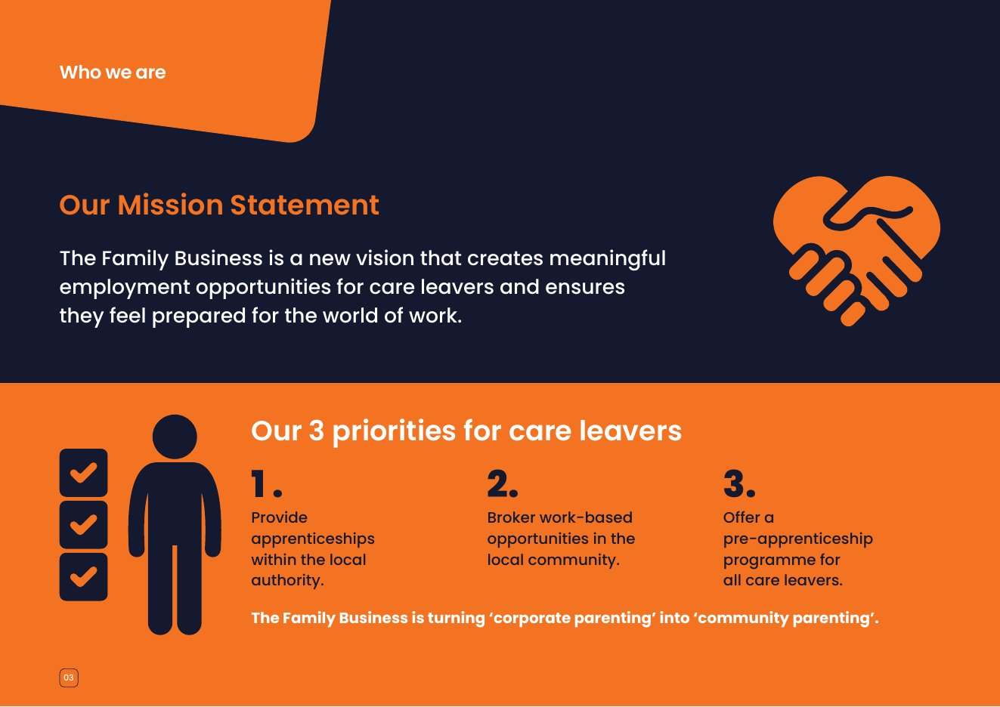
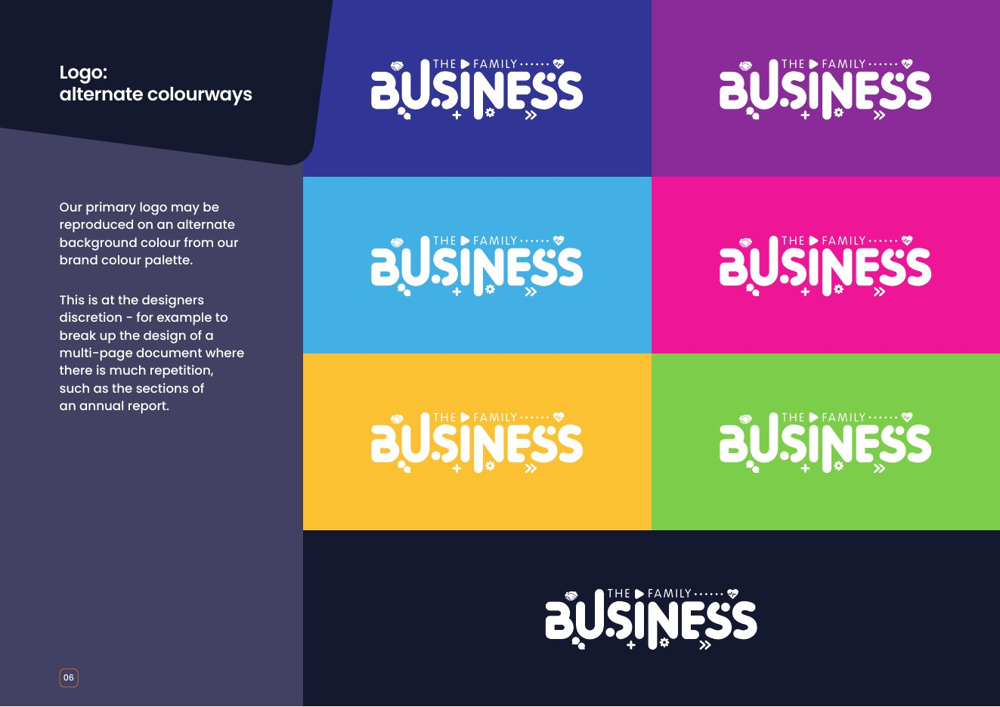

Suffolk County Council: from corporate parenting to community parenting
A family business looks after its own. Suffolk wanted its care leavers to experience the council that way, with real jobs, real employers and someone in their corner.


The starting point
Care leavers in Suffolk had a corporate parent in the council, but not many of the things a parent gives you: a first job, a contact who knows someone, a place to learn how work works. The council wanted to change that from the inside, starting with its own jobs.
What we heard
A two-day stakeholder review across seven groups, from care leavers to managers and HR, showed goodwill everywhere and routes into work almost nowhere. Services wanted to help but didn’t know how to make an apprenticeship work for a young person without family behind them.
What we did
- Late 2022Stakeholder reviewAcross seven groups, from care leavers to HR
- 2023A six-phase programmeCore document, a brand co-designed with young people, comms strategy, induction and supervisor training, a project board and weekly coaching
- 2023Employers in the roomAn Innovation Board of local business owners, an employer information event and the Community Hub launch
- September 2023Placements liveIn Waste, Fire and Rescue, and Home First
- October 2023First Skills Academy intake
- 2023 to 2024Keeping it goingCoaching, apprentice onboarding and sustainability planning
- 2024The filmsA documentary, “Turning Corporate Parenting into Community Parenting”, and four case-study films for Leaving Care Week
How we worked
Story
Care leavers shaped the brand and told their own stories in the films.
Theory
What the evidence says young people need to stay in work, built into supervisor training.
Tools
An induction pack, supervisor training and a managers’ approach services could run themselves.
What changed
The employer launch in September 2023 drew over 60 people, and the council’s own report recorded “an overwhelming number of opportunities” for young people. Five ring-fenced apprenticeships were agreed, the NHS offered a six-week course for 30 care-experienced people, and the Skills Academy, run in partnership with a local alternative provision, took its first intake in October 2023. Up to 40 young people gained qualifications through it. By the time of the CYP Now award evidence, six care leavers had council apprenticeships and four had completed or were on track.
“6 young care leavers with an apprenticeship within our own organisation, 4 of which have either successfully completed or are on track.”

Watch the films
The Family Business: information for employersPlaying this video loads it from YouTube, which may set cookies. Our privacy notice
The Family Business: information for care leaversPlaying this video loads it from YouTube, which may set cookies. Our privacy notice

See the work
What we made, and what it looked like.
The brand
The Family Business name, logo and guidelines, co-designed with Suffolk’s care leavers.
Recruitment campaign
A4 posters and digital assets telling real stories: Hugo, Imani and Naomi.
How it works
An infographic for care leavers and personal advisers, from joining to the next step.
Employer launch
Over 60 people at the launch, and the Skills Academy that followed.







